SNe Ia growth-rate measurements with Rubin-LSST simulations: intrinsic scatter systematics
B. Carreres, R. Chen, E. Peterson, D. Scolnic, C. Ravoux, D. Rosselli, M. Acevedo, J. E.
Bautista, D. Fouchez, L. Galbany, B. Racine and The LSST Dark Energy Science Collaboration
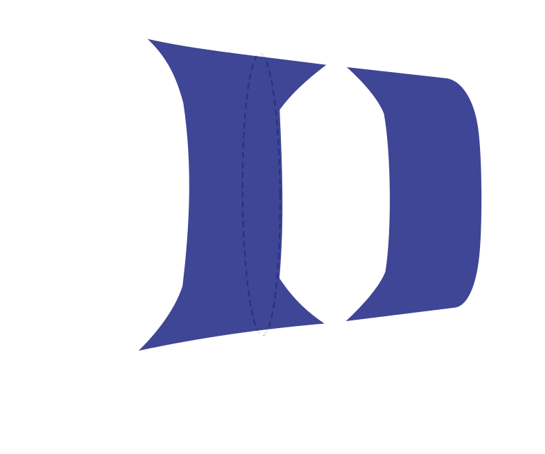
\(f\sigma_8\) as a probe for general relativity
Cosmological principle:
Universe is homogeneous
Observations:
Universe is not exactly homogeneous
Matter density fluctuations: $\delta(\mathbf{x}) = \frac{\rho(\mathbf{x})}{\bar{\rho}} - 1$
$\sigma_8$ : fluctuation over sphere of
8 Mpc.$h^{-1}$ radius
$\delta(\mathbf{x}) = \sigma_8 \tilde{\delta}(\mathbf{x})$
Fluctuations evolve over time
$\delta(\mathbf{x}, t) = \delta(\mathbf{x})D(t)$
Evolution of structures:
Dark energy vs Gravity
$$f = \frac{\text{d}\ln D}{\text{d}\ln a}$$
$f \simeq \Omega_m^\gamma$
General Relativity + $\Lambda$CDM: $\gamma \simeq 0.55$
$\gamma \equiv$ Growth index
$f$ measurement is generally degenerate with $\sigma_8$ !
$\Rightarrow f\sigma_8$

Image credits: Illustris TNG
How to measure $f\sigma_8$ ?
Velocities are probes of $f\sigma_8$!
Velocity statistics directly depend on $f\sigma_8$:
$\langle v(\mathbf{x_i})v(\mathbf{x_j})\rangle \propto \left(f\sigma_8\right)^2$
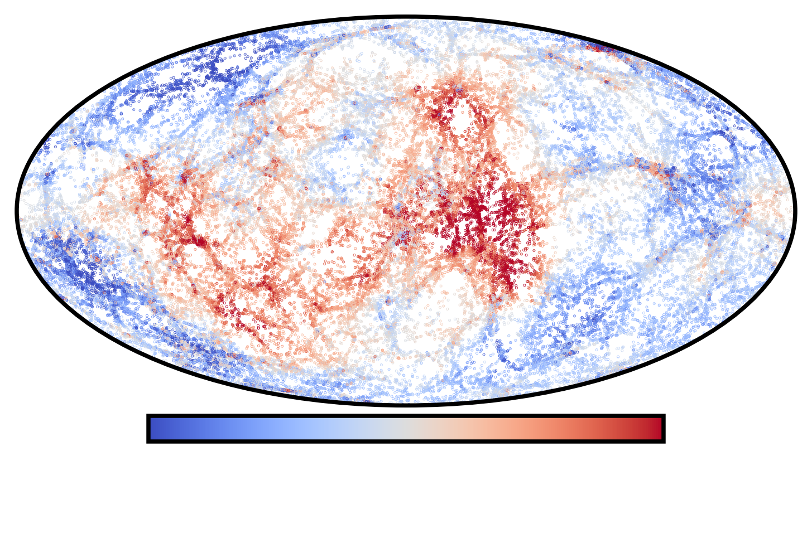
Image credits: Illustris TNG
Estimating velocities from SNe Ia
Observed redshifts:
$1 + z_\mathrm{obs} = (1 + z_\mathrm{cos}) (1 + z_\mathrm{p})$ with $z_p\simeq v_p / c$
Hubble residuals:
$\Delta\mu = \mu_\mathrm{obs} - \mu_\text{th}(z_\mathrm{obs}) = 0$
$\Delta\mu = \mu_\mathrm{obs} - \mu_\text{th}(z_\mathrm{obs}) \simeq-\frac{5}{c\ln10}\left(\frac{(1 + z)c}{H(z)r(z)} -
1\right)v_p$
$v_p \simeq -\frac{c\ln10}{5}\left(\frac{(1 + z)c}{H(z)r(z)} - 1\right)^{-1}\Delta\mu$ $\sigma_{v_p} \simeq -\frac{c\ln10}{5}\left(\frac{(1 + z)c}{H(z)r(z)} - 1\right)^{-1}\sigma_{\Delta\mu}$
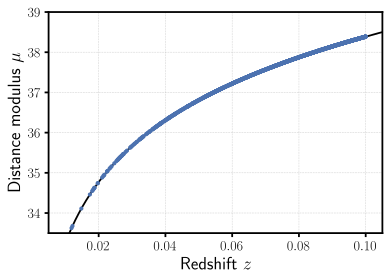
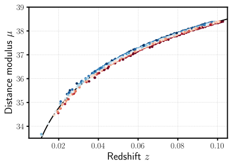
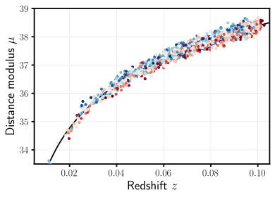
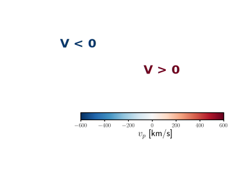
The intrinsic scatter of SNe Ia

Main systematic of DES 5-year dark energy analysis (Vincenzi et al. 2023)!!!
What about $f\sigma_8$ ???
The intrinsic scatter of SNe Ia
In this work we considered 4 models of intrinsic scatter
-
Random coherent scatter (COH)
Achromatic
Unrealistic
-
The G10 model (Guy et al. 2010):
$\sim 70\%$ achromatic / $\sim 30\%$ chromatic
Historically used (Pantheon, Pantheon+)
-
The C11 model (Chotard et al. 2011):
$\sim 30\%$ achromatic / $\sim 70\%$ chromatic
Historically used (Pantheon, Pantheon+)
-
The BS21 model (Brout & Scolnic 2021),
parameters from Popovic et al. 2023 (P23):
Dust-based model
Currently favored by data (DES 5-year)
Achromatic
Unrealistic
$\sim 70\%$ achromatic / $\sim 30\%$ chromatic
Historically used (Pantheon, Pantheon+)
$\sim 30\%$ achromatic / $\sim 70\%$ chromatic
Historically used (Pantheon, Pantheon+)
parameters from Popovic et al. 2023 (P23):
Dust-based model
Currently favored by data (DES 5-year)
Rubin-LSST Simulations
We used the SNANA software (Kessler et al. 2009) to simulate the 10 years of the Rubin-LSST survey!
- Survey parameters from LSST survey simulation (OpSim)
-
SN Ia model: Spectra model (SALT3) + SALT parameter distributions + intrinsic scatter model
-
Host catalog: Uchuu UniverseMachine N-body simulation (Ishiyama et al. 2021, Aung et al. 2022)
Simulation: Correlations SN Ia - host

Simulation: the SNe Ia simulated sample
Simulation up to $z\sim0.16 \ \Rightarrow \ N_\text{SN} \sim O(50 \ 000)$
Using SNe Ia up to $z\sim0.1 \ \Rightarrow \ N_\text{SN} \sim O(6~600)$
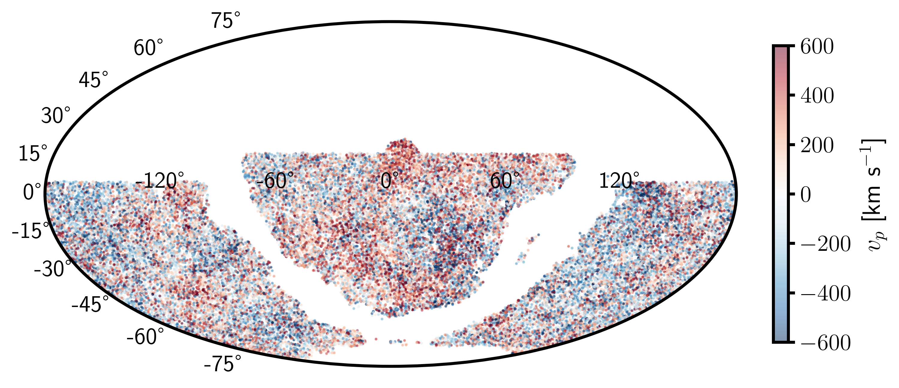
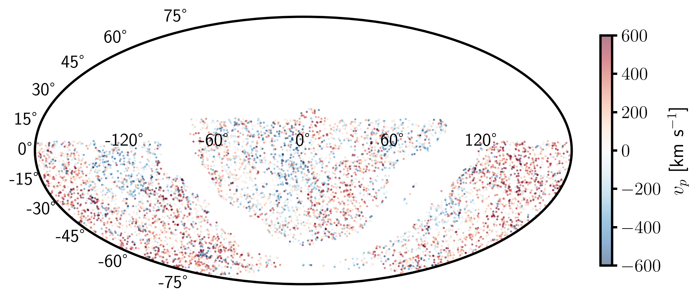
Building the Hubble diagram
Building the Hubble diagram: simple framework
Fit for the Tripp relation along $f\sigma_8$:
$\boldsymbol{\mu_\mathrm{obs}} = \boldsymbol{m_B} - \left({\color{red} M_0} - {\color{red} \alpha} \boldsymbol{x_1} + {\color{red}
\beta} \boldsymbol{c} + \boldsymbol{\Delta_M}\left(\mathbf{M_\mathrm{host}}; {\color{red} \gamma}\right)\right)$
$\boldsymbol{\sigma_\mu}^2 = \boldsymbol{\sigma_\mathrm{obs}}^2 + {\color{red}\sigma_\mathrm{int}}^2$
${\color{red}M_0}$, ${\color{red}\alpha}$, ${\color{red}\beta}$, ${\color{red}\gamma}$ and ${\color{red}\sigma_\mathrm{int}}$ are free
parameters.
Building the Hubble diagram
Building the Hubble diagram: BBC framework
$\boldsymbol{\mu_\mathrm{obs, BBC}} = \boldsymbol{m_B} - \left({\color{red} M_0} - {\color{red}\alpha} \boldsymbol{x_1} +
{\color{red}\beta} \boldsymbol{c} + \boldsymbol{\Delta_M}\left(\mathbf{M_\mathrm{host}}; {\color{red}\gamma}\right)\right) +
\delta_\mathrm{corr.}$
$\boldsymbol{\sigma_\mu}^2 = \boldsymbol{\sigma_\mathrm{obs}}^2 + {\color{red}\sigma_\mathrm{int}}^2$
$\delta_\mathrm{corr.}$ is obtained by:
-
Running an extra-large simulation ($\sim40\times$ LSST) and fitting the Hubble diagram
-
Binning over the parameters $p=\left\{z_\mathrm{obs}, x_1, c, M_\mathrm{host}\right\}$
-
Computing the correction in each cell $\delta_\mathrm{corr.} = \left<\mu_\mathrm{obs} - \mu_\mathrm{fid}\right>_\mathrm{cell}$
- Interpolate over the cells to obtain $\delta_\text{corr.}(p)$
${\color{red}\alpha}$, ${\color{red}\beta}$, ${\color{red}\gamma}$ and ${\color{red}\sigma_\mathrm{int}}$ are fitted prior to
$f\sigma_8$
The maximum likelihood method
The maximum likelihood mehod
The Maximum likelihood method is implemented within the
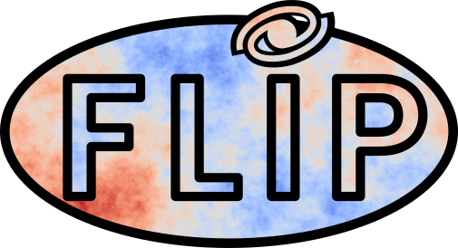
package (Ravoux, Carreres et al. 2025)
We want to maximize the likelihood function: $$\mathcal{L}(f\sigma_8; v_p) \propto \left(2\pi\right)^{-\frac{N}{2}}\left|\text{C}(f\sigma_8)\right|^{-\frac{1}{2}}\exp\left(-\frac{1}{2}\boldsymbol{v_p}^T\text{C}(f\sigma_8)^{-1}\boldsymbol{v_p}\right)$$
$\text{C}(f\sigma_8) =\text{C}^\mathrm{obs} + \text{C}^{vv}(f\sigma_8)$
The maximum likelihood mehod: velocity covariance
The covariance of the velocity field is: $$\langle v_i(\mathbf{r}_i) v_j(\mathbf{r}_j)\rangle = \text{C}_{ij}^{vv}\propto
({\color{red}f\sigma_8})^2 \int_{k_\mathrm{min}}^{k_\mathrm{max}} P(k) W_{ij}(k; \mathbf{r}_i, \mathbf{r}_j) {\rm d}k $$
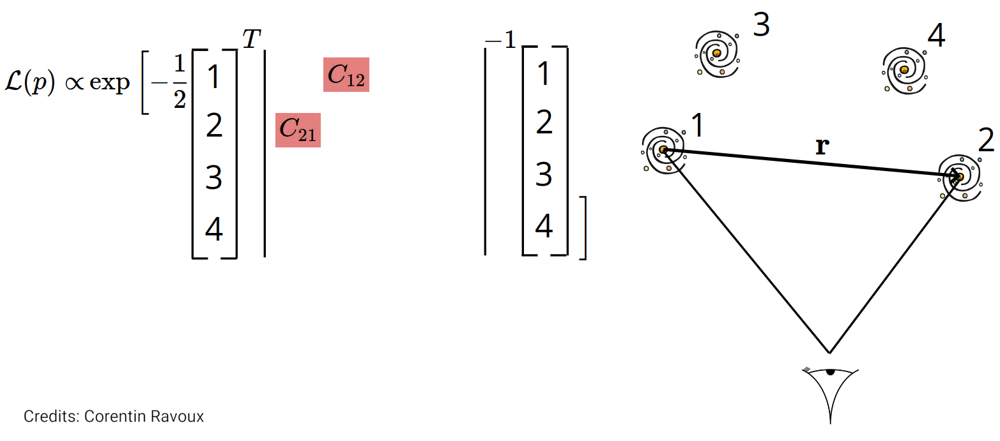
The $\sigma_u$ redshift space parameter
Positions are evaluated using $z_\mathrm{obs} \ \Rightarrow$ Redshift Space Distorsion
Empirical damping introduced in Koda et al. 2014: $D_u = \text{sinc}(k\sigma_u)$
$$\text{C}_{ij}^{vv}\propto (f\sigma_8)^2 \int_{k_\mathrm{min}}^{k_\mathrm{max}} P(k){\color{red} D_u(k, \sigma_u)}^2 W_{ij}(k;
\mathbf{r}_i, \mathbf{r}_j) {\rm d}k$$
From a fit of true vel. from randomly sampled galaxies of the Uchuu simulation we found $\sigma_u \simeq 21 \text{ Mpc }h^{-1}$

Fitting for $f\sigma_8$
Results: Estimated velocities
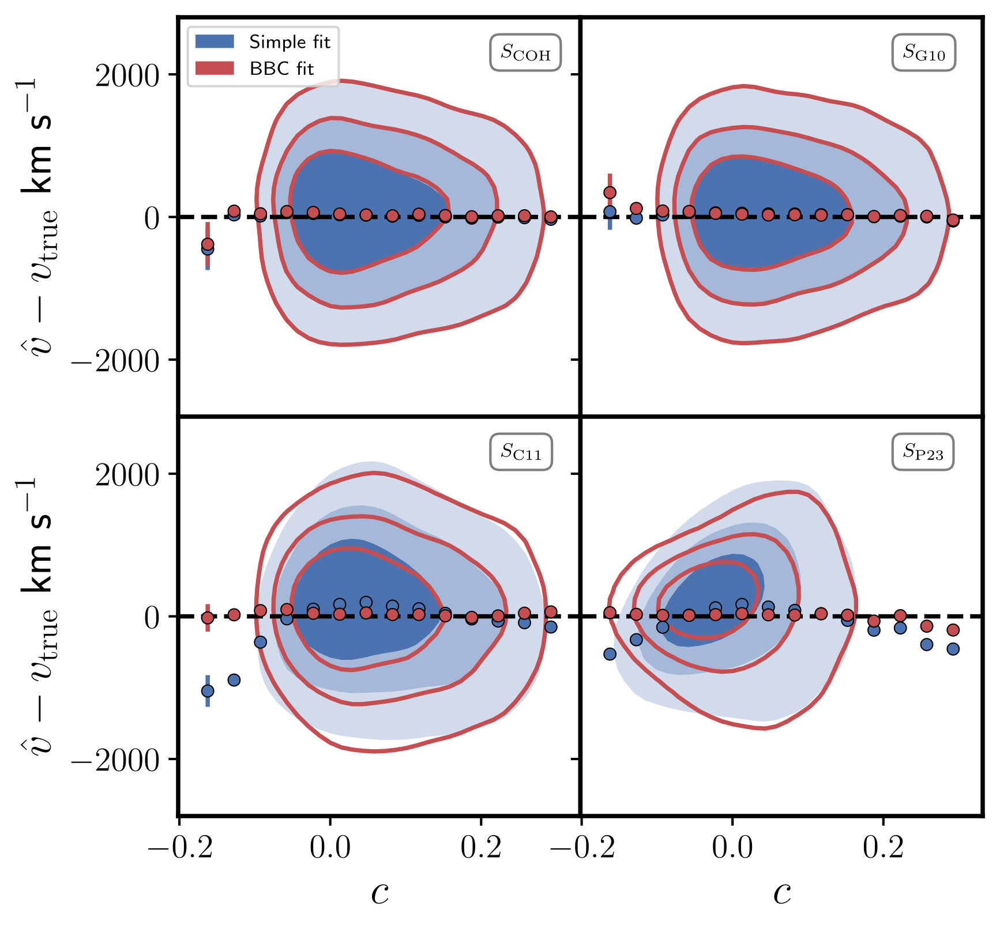
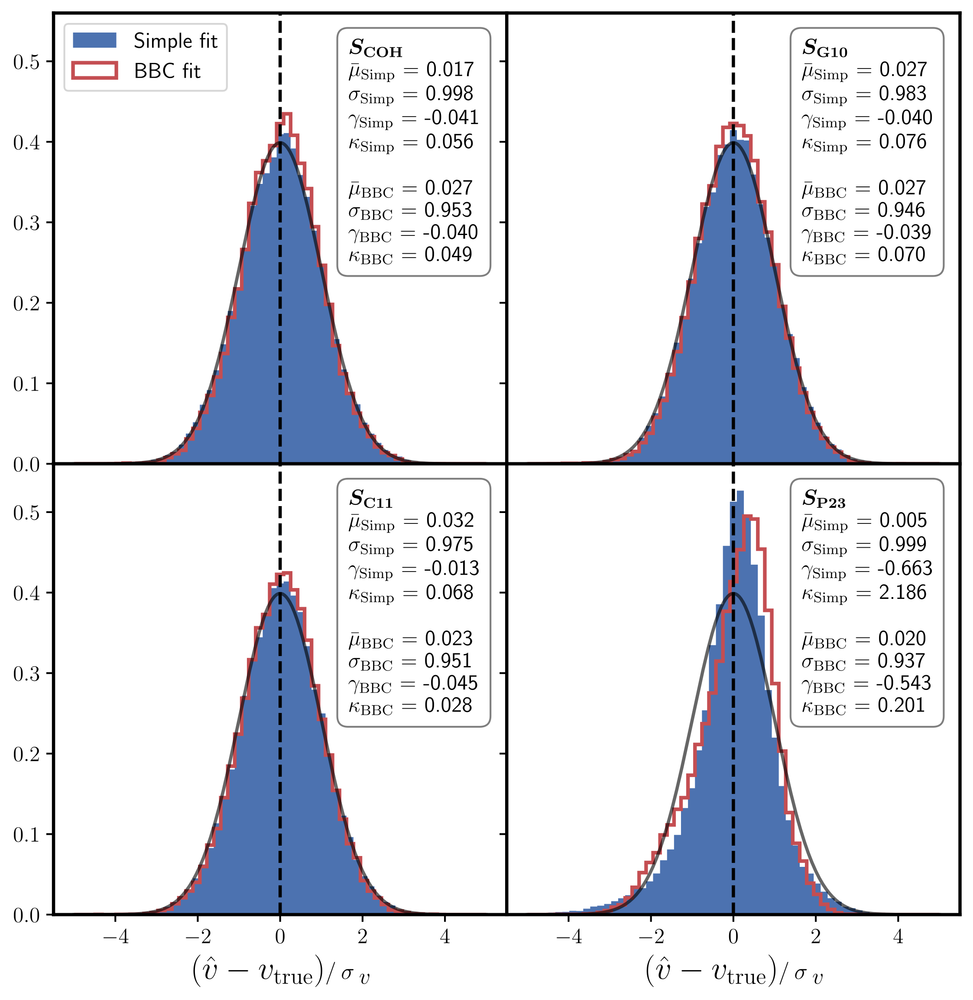
Results: $f\sigma_8$ fit for different scatter models
-
True vel. fit:
Unbiased $f\sigma_8$
$\sigma_{f\sigma_8}\sim 5\%$
-
COH, G10 and C11:
Similar results for simple and BBC fit
Unbiased $f\sigma_8$
$\sigma_{f\sigma_8}\sim 13-14\%$
-
P23 - Simple fit: $\sigma_{f\sigma_8}\sim 15\%$
P23 - BBC fit: $\sigma_{f\sigma_8}\sim11\%$
Results for P23 are biased by $>20\%$ !!!
Unbiased $f\sigma_8$
$\sigma_{f\sigma_8}\sim 5\%$
Similar results for simple and BBC fit
Unbiased $f\sigma_8$
$\sigma_{f\sigma_8}\sim 13-14\%$
P23 - BBC fit: $\sigma_{f\sigma_8}\sim11\%$
Results for P23 are biased by $>20\%$ !!!
Results: Systematics - BS21 parameter variations
Errors on BS21 parameters propagated as in DES 5-year analysis (Vincenzi et al. 2024)
No change in $f\sigma_8$ fit!!!
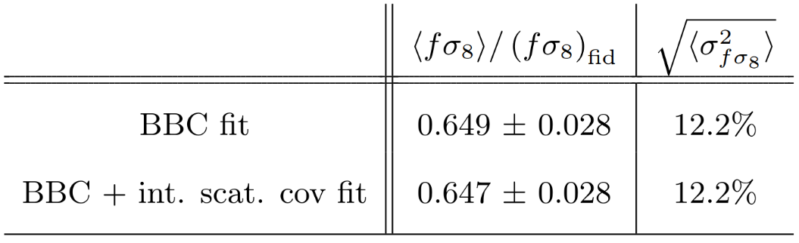Results: Systematics - $\sigma_u$ RSD parameter
$\Delta\sigma_u \sim 18.5 - 23.5 \text{ Mpc }h^{-1}$ ⇨ $\sigma_{f\sigma_8}^{\sigma_u}\sim6\%$

Conclusion
-
Estimated PVs are on average unbiased when using the BBC method compared to the simple method
- The BS21 model predicts non-gaussianity that biases the measurement of $f\sigma_8$
- Statistical error represents $75\%$ of the $f\sigma_8$ error budget
- The uncertainty on BS21 parameters is not a major systematic for $f\sigma_8$
-
The leading systematic, the uncertainty on the RSD parameter, $\sigma_u$, leads to an error of $\sim6\%$ on $f\sigma_8$
What's next?
- Is the BS21 model prediction correct? Will we see non-Gausianities in data?
- Is it possible to find a better RSD parametrisation than $\sigma_u$?
Thank you for your attention !